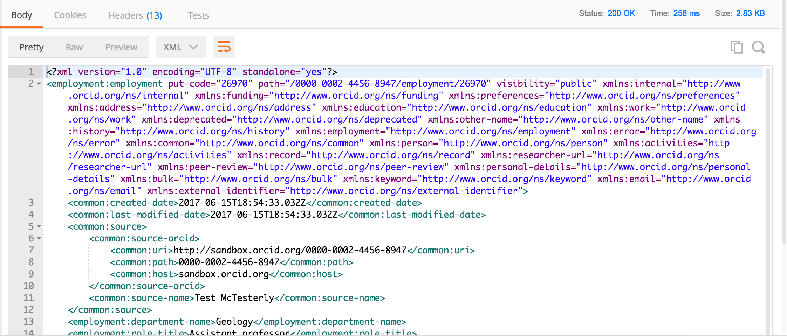

3. READ public info
In this section, we'll use the Public API to take a look at the underlying data for our Sandbox record. For more details on this process, see our Basic tutorial: Read data on an ORCID record
Get an access token
Reading and searching public data on ORCID records requires an OAuth 2.0 access token obtained using a client credentials grant type.
This type of token can be re-used many times to read or search any ORCID records.
- In the Postman Builder tab, click Authorization, then set the Type dropdown to OAuth 2.0

- Click Get New Access Token
- Enter the following settings:
| Field | Value |
|---|---|
| Token Name | Read public |
| Auth URL | Leave blank |
| Access Token URL | https://sandbox.orcid.org/oauth/token |
| Client ID | APP-XA6KUTFCVQL0622C(Demo client ID created for this workshop) |
| Client Secret | 7c8d6b1b-401b-4f5d-9b8b-b8108c6e197c(Demo client secret created for this workshop - do not share API client secrets!) |
| Scope | /read-public This scope allows reading or searching public data on any ORCID records ORCID Scopes |
| Grant Type | Client Credentials |
- Leave Request access token locally unchecked and click Request Token

- Beneath Existing Tokens, click Read public. The access token will appear at right. Notice that the token expires in
631138518 sec (20 years), which means that this token can be reused for some time.

Read a record summary
- Set the request type to GET
- In the Enter request URL field enter:
https://pub.sandbox.orcid.org/v2.0/0000-0002-4456-8947/record
Replace the ORCID iD above with the iD for your Sandbox record, format XXXX-XXXX-XXXX-XXXX

- Click Send
- A summary version of your record in XML format will appear in the Body section of the response

Read activity details
To get more information about a specific item on an ORCID record, you can retrieve that individual item using its put-code.
- In the record summary XML, find the activities-summary section, then find the put-code for the employment item that you added in the previous section.

- In the Request URL field enter:
https://pub.sandbox.orcid.org/v2.0/0000-0002-4456-8947/employment/26970
Replace [ORCID ID] with the iD for your Sandbox record, format XXXX-XXXX-XXXX-XXXX and the put-code with the put-code for your employment item

- Click Send
- Fulls details of your employment entry will appear in the Body of the response section
